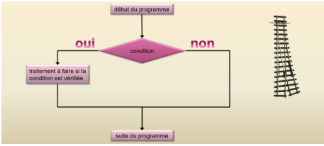
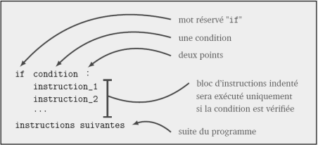
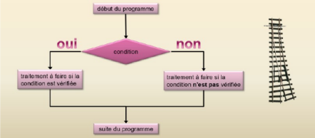
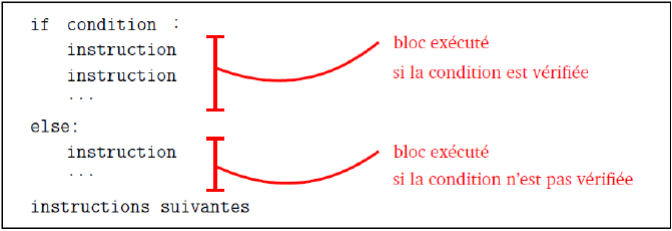
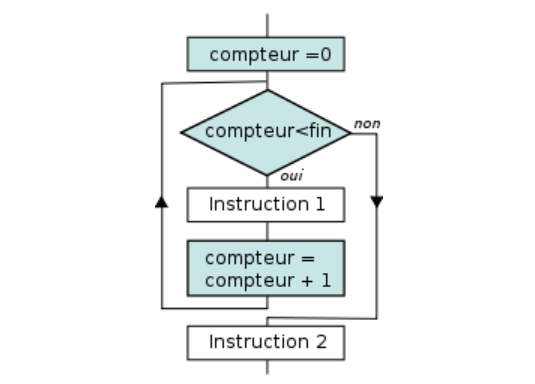
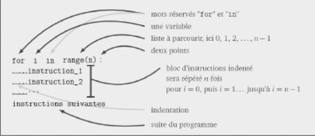
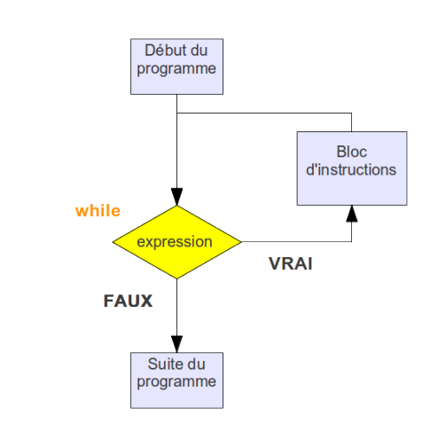
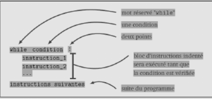

Jusqu’à présent, nous avons vu des algorithmes simples qui se déroulent en séquence de la première à la dernière instruction. Cependant, ces instructions en séquence ne suffisent pas à exécuter des algorithmes plus complexes où :
Le chemin suivi par le programme est appelé le flux d’exécution et les instructions qui le modifient sont appelées les instructions de contrôle de flux.
Dans certains cas, on ne veut exécuter une instruction que sous une condition
Synthèse :
Après avoir tapé if (condition) et appuyé sur entrée, l’éditeur va alors automatiquement indenter (décalage vers la droite) les lignes d’instructions suivantes. En effet, toutes les instructions qui doivent être effectuées si la condition est vraie doivent être indentées, et elles doivent avoir impérativement la même indentation.
Exemple : le programme suivant affiche "candidat reçu" mais uniquement que celui-ci ait une moyenne supérieure ou égale à 10 :
En fait la condition évaluée m>=10 renvoie un booléen : True (vrai) ou False (faux). Il est possible de le vérifier en rajoutant l’instruction suivante en fin de programme :
Afin d’écrire une condition, on utilise les opérateurs de comparaison suivants :
| Opérateur | Signification littéraire |
|---|---|
| < | strictement inférieur à |
| > | strictement supérieur à |
| <= | inférieur ou égal à |
| >= | supérieur ou égal à |
| == | égal à |
| != | différent de |
Attention : l’égalité de deux valeurs est exprimée avec l’opérateur « == » et non « = ». Ce dernier est en effet l’opérateur d’affectation et ne doit pas être utilisé dans une condition.
Ces opérateurs de comparaisons peuvent être combinés aux opérateurs logiques (ou opérateurs booléens) suivants :
| Opérateur | Rôle |
|---|---|
| a and b | Vraie si a et b sont vraie |
| a or b | vraie si a ou b (ou les deux) sont vraies |
| not(a) | si a est vraie, not(a) est fausse et inversement |
Exemple : le programme suivant détermine si le candidat aura une mention BIEN. Pour cela sa note doit être supérieure ou égale à 12 et inférieure strictement à 14 :
Là encore, l’expression évaluée : m >= 10 and m < 12 renvoie un booléen :
Remarque n°1 : En python (contrairement au langage Java par exemple), la condition if (m >= 12 and m < 14): peut être remplacée par la condition if (12 <=m < 14).
Remarque n°2 : En python, la condition évaluée n’est pas obligatoirement entre parenthèses, mais dans le cas d’expressions complexes, les parenthèses sont vivement conseillées.
Dans certains cas on ne veut exécuter une séquence d’instructions que si la condition évaluée est vraie et exécuter une autre séquence d’instruction si la condition évaluée est fausse.
Syntaxe :
Exemple : le programme renvoie systématiquement une réponse : "candidat reçu" (si condition évaluée vraie) sinon "candidat non reçu" si condition évaluée fausse) :
Il est possible d’ajouter autant de conditions précises que l’on souhaite en ajoutant le mot clé elif, contraction de "else" et "if", qu’on pourrait traduire par "sinon".
Il est possible de tester autre chose que des nombres, par exemple des caractères
Il est même possible de savoir si la lettre tapée se trouve avant ou après une lettre donnée dans l’alphabet :
Les traitements informatiques nécessitent souvent l’exécution de tâches répétitives. La boucle for permet d’effectuer un nombre de fois bien déterminé le corps de boucle (séquence d’instructions). Elle s’utilise généralement avec la fonction range qui permet de générer une séquence de nombres entiers allant de 0 à n exclu.
Syntaxe :
Après avoir tapé for i in range(n) et appuyé sur entrée, l’éditeur va alors automatiquement indenter les lignes d’instructions suivantes. En effet, toutes les instructions à répéter doivent être indentées, et elles doivent avoir impérativement la même indentation.
Exemple 1 : le code suivant répète 10 fois l’instruction suivante
La fonction range peut accepter 3 arguments : range (valeur_début, valeur_fin, pas). Les 3 arguments (valeur_début, valeur_fin, pas) sont obligatoirement des entiers !
Exemple 2 : Le programme suivant calcule \( x^n \)
La boucle while est assez peu différente de la boucle for. On l’utilise lorsque l’on ne sait a priori pas combien de boucles vont être effectuées. On l’utilise également lorsque l’on veut réaliser des incrémentations avec un pas qui ne soit pas entier, par exemple lors d’un tracé de courbe. La boucle « tant que » exécute le corps de boucle (instructions indentées) tant qu’une condition évaluée dans le test de poursuite est vraie. Dès que la condition devient fausse, elle passe aux instructions suivantes.
Syntaxe :
Attention : lorsque que l’on utilise une boucle while, il faut s’assurer que la condition évaluée dans le test de poursuite deviendra fausse à un moment ou un autre, sinon ...le programme va boucler indéfiniment !
Exemple : Le programme suivant indique tous les entiers x dont le carré est inférieur à un nombre n donné et indique également leur nombre (0 compris).
Données : pour choisir un nombre au "hasard", on utilise la fonction randint() de la bibliothèque random.
Exemple :
Il est possible d’imbriquer des boucles, c’est-à-dire que dans le bloc d’une boucle (boucle extérieure), on utilise une nouvelle boucle (boucle intérieure).
Exemple :Il est possible de modifier le programme de la table de multiplication vu précédemment afin qu’il affiche toutes les tables de multiplication de 1 jusqu’à 10. Pour cela, il suffit d’imbriquer le programme précédent à l’intérieur d’une boucle qui fait varier n de 1 à 10
Une chaîne de caractères (type string) est composée de ... caractères ! Il est possible de parcourir ces caractères avec une structure for... in...
Exemple : le programme suivant demande une chaîne de caractères et insère un "." entre chaque caractère :
Il est possible d’accéder à chaque caractère d’une chaîne à l’aide de son indice de position. Le premier caractère est toujours indexé 0.
Exemple : pour afficher le 1er et 5ème caractère d’une chaîne :
Remarque : la fonction len() retourne la longueur de la chaîne.
Bravo, vous avez terminé le cours théorique ! Maintenant il faut pratiquer. Pour cela cliquez sur ce lien qui vous mènera à une série d'exercices sur le contrôle de flux d'éxécution.